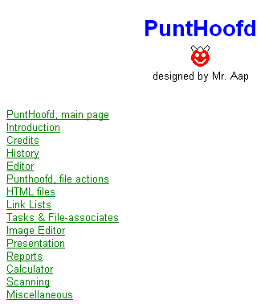

september, 2005
Report Generation
Introduction
JALcc can generate a report, including cover and contents-list, from a number of single documents. The key-item of a report is a directory, with a number of known documents. Normally all subdocuments will be assumed in 1 directory and all the known documents in that directory together will form the report. Known documents are RVF,RTF,HTML,TXT. It's also possible to include dynamically generated documents by other programs (see dynamic pages).
Start Report Generator
It's important to realize that the report is generated on the current active printer. You can set the active printer through file --> printer setup, where also the papersize can be chozen. After the report is generated, the selected printer and papersize is displayed in the statusbar.
After the cover page is selected (viewed), the report generator can be started, by ...
JALcc will first scan the directory (where the cover page is located), to look for missing links. Missing links will be added at the bottom of the cover page, after a break (for html-files the title is inserted as the text of the link). If missing links were found, JALcc stops, and displays a message so you can rearrange the added links.
After (re-)starting the report generator, and no missing links are found, the generation of the report will start and will continue until the break. So all the links after the break are ignored. The result will be shown in the viewer/editor, after which you print the result (storing is not meaningfull, because pagebreaks are lost in html files). It's possible to add manually links to pages from other directories into the cover page.
Cover Page
The cover page is all the contents of the active page, until the first link. A pagebreak will be inserted automatically and links will be removed in the final report. The cover page may contain links to all files, but doesn't need to have these links. JALcc can generate all the links for you. The cover page can have also links to pages in other directories. The cover page is printed without header and footer. Below is an example of a cover page. The first non-empty line in the cover page is used as a pageheader.

Dynamic Pages
By inserting a link to an executable program, it's possible to dynamically generate parts of the report by other programs. When the report generator detects a link to an executable, it pauses and starts the executable program, waits till the executable has finished his task and then continues. The report generator tries to read the file created by the executable and will incorporate the contents in the report.
The link should look like
program.exe <par1> <par2> <par3> ...
par1 = the file where the executable program should dump the contents
par2, etc are extra parameters to tell the executable what and how to do his task (of course these parameters are specific to the executable.
Saving the Report
RTF = 5 MB
PDF = 140 kB
HTML = no page breaks
Scripting
Report Scripting
TextStyle=11 (formerly unicode) is reserved for my personal scripting. It has no sense for others, and is therefor also described in Dutch !! Besides in this version scripting is disabled.
%-Variabelen
Een aantal parameters worden normaliter gezet door TO. Om deze ook in PH te kunnen definieren, is de %-variabele toegevoegd. De %-variabele wordt in de TO genegeerd (of preciezer, PH_script bevat de boolean "punthoofd_substitutes", die true gezet moet worden om de regels met %-variabelen te interpreteren.
Momenteel zijn de volgende %-variabelen geïmplementeerd:
%Patient
Systeem Variabelen
Deze variabelen kunnen in het rapport van een waarde worden voorzien.
Momenteel zijn de volgende systeem-variabelen geïmplementeerd:
Discipline
Vraagstelling